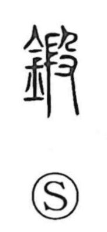

鍛

Uncategorized
Kun: kitaeru | On: tan
to forge ・ to temper ・ to train
Explanation
鍛 is a phono-semantic character: the metal sign (金) sets the sphere of meaning, while 段 provides the sound and, in its old form, depicts the pounding and refining of raw metal. Thus the character expresses beating, forging, and tempering—kitaeru and uchi-kitaeru—striking metal to purify and shape it. Early texts such as the Zhou Rites mention the Duan clan of smiths, specialists in forging tools and implements. From the concrete image of hammering thin sheets came the terms 鍛錬/鍛練 for tempering, which naturally extended to the disciplined training of skill, body, and mind.